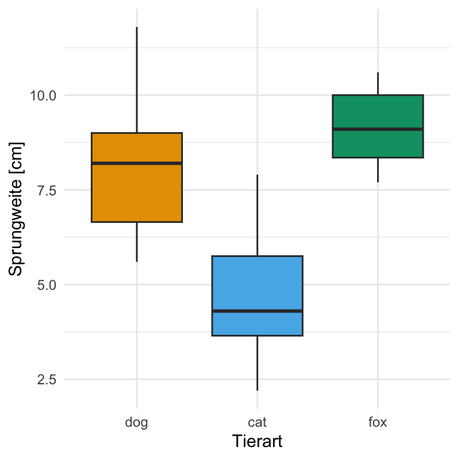
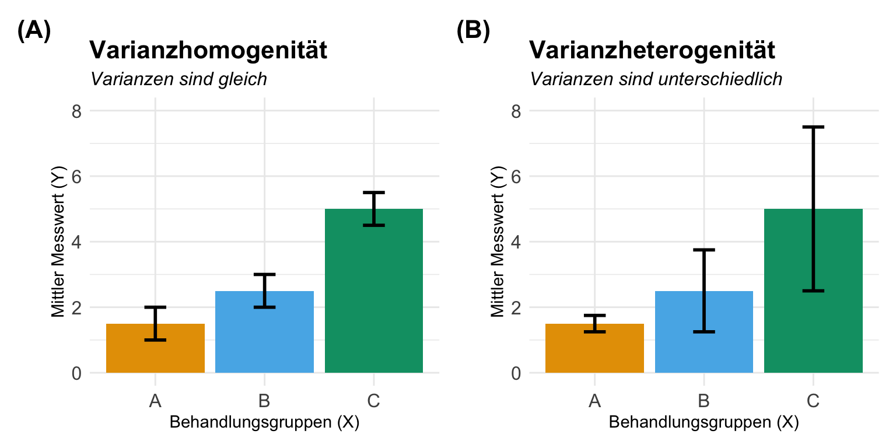

| Anzahl Gruppen | Anzahl Vergleiche | Signifikanzniveau \(\alpha\) | Maximal signifikanter p-Wert | \(H_0\) fälschlich abgelehnt |
|---|---|---|---|---|
| 2 | 1 | 5.00% | 0.0500 | 0 |
| 3 | 3 | 1.67% | 0.0167 | 0 |
| 4 | 6 | 0.83% | 0.0083 | 0 |
| 5 | 10 | 0.50% | 0.0050 | 0 |
| 6 | 15 | 0.33% | 0.0033 | 1 |
| 7 | 21 | 0.24% | 0.0024 | 1 |
| 8 | 28 | 0.18% | 0.0018 | 1 |
| 9 | 36 | 0.14% | 0.0014 | 2 |
| 10 | 45 | 0.11% | 0.0011 | 2 |
| 11 | 55 | 0.09% | 0.0009 | 3 |
| 12 | 66 | 0.08% | 0.0008 | 3 |
Der Post-hoc Test
Letzte Änderung am 10. January 2025 um 09:38:43
“Comparison is the thief of joy.” — Theodore Roosevelt

In diesem Kapitel werde ich ein paar Engel der Statistik niedergeschlagen oder überfahren. Ich lasse aus Gründen der Didaktik ein paar Sachen weg und dadurch wird einiges leider dann mathematisch unkorrekt. Ich kann damit leben und nehme es auf mich damit du deine Abschlussarbeit fertig bekommst.
| Tukey HSD | Games Howell | {emmeans} |
{multcomp} |
|
|---|---|---|---|---|
| Verteilung von y | normalverteilt | normalverteilt | beliebig | beliebig |
| Varianzen von x | homogen | heterogen | beliebig | beliebig |
| Fallzahl per Gruppe | balanciert | beliebig | beliebig | beliebig |
| Adjustierte p-Werte | immer | immer | beliebig | beliebig |
| Mögliche Vergleiche | all-pair | all-pair | beliebig | beliebig |
Auf der Seite DSFAIR gibt es noch einen Artikel zu emmeans und der Frage Why are the StdErr all the same? und dazu dann auch passend die Publikation Analyzing designed experiments: Should we report standard deviations or standard errors of the mean or standard errors of the difference or what?
- Wieviel ist den all-pair?
-
Wenn du alle möglichen Mittelwertkombinationen testen willst, dann ist die Formel für die Berechnung der durchzuführenden Vergleiche \(r = m(m-1)/2\). Oder um es einmal in der folgenden Tabelle etwas konkreter darzustellen, werden es sehr schnell sehr viele Vergleiche. Dabei drückst du mit jeder zusätzlichen Behandlungsgruppe das Signifikanznievau \(\alpha\) weiter runter, da die Anzahl an potenziellen Vergleichen sehr schnell ansteigt. So fällt dann auch der maximal noch signifikante p-Wert schnell ab. Damit brauchst du dann immer stärkere Effekt, wie einen Mittelwertsunterschied, um überhaupt noch was signifikantes aus einem statistsichen Test wiedergeben zu bekommen. In der folgenden Tabelle siehtst du dann nochmal den Zussammenhang. Ohne Adjustierung des Signifikanzniveaus erhalten wir schon ab sechs Gruppen mindestens einen signifikanten Unterschied auch wenn es gar keinen Unterschied in den Daten gibt.

Genutzte R Pakete
Wir wollen folgende R Pakete in diesem Kapitel nutzen.
pacman::p_load(tidyverse, readxl, knitr, kableExtra, Hmisc, see, latex2exp,
multcomp, emmeans, ggpubr, multcompView, nlme, quantreg, janitor,
parameters, effectsize, patchwork, agricolae, broom, conflicted)
conflicts_prefer(dplyr::select)
conflicts_prefer(dplyr::filter)
cbbPalette <- c("#000000", "#E69F00", "#56B4E9", "#009E73",
"#F0E442", "#0072B2", "#D55E00", "#CC79A7")An der Seite des Kapitels findest du den Link Quellcode anzeigen, über den du Zugang zum gesamten R-Code dieses Kapitels erhältst.
Daten
fac1_tbl <- read_xlsx("data/flea_dog_cat_fox.xlsx") |>
select(animal, jump_length) |>
mutate(animal = as_factor(animal))| animal | jump_length |
|---|---|
| dog | 5.7 |
| dog | 8.9 |
| dog | 11.8 |
| … | … |
| fox | 10.6 |
| fox | 8.6 |
| fox | 10.3 |
Die Funktion standard_error() aus dem R Paket {parameters}
| animal | Mittelwert | Standardabweichung | SE |
|---|---|---|---|
| dog | 8.13 | 2.14 | 0.81 |
| cat | 4.74 | 1.90 | 0.72 |
| fox | 9.16 | 1.10 | 0.42 |

Wir machen den Datensatz mal kleiner
fac2_tbl <- read_xlsx("data/flea_dog_cat_fox_site.xlsx") |>
select(animal, site, jump_length) |>
filter(site %in% c("city", "village")) |>
mutate(animal = as_factor(animal),
site = as_factor(site))| animal | site | jump_length |
|---|---|---|
| cat | city | 12.04 |
| cat | city | 11.98 |
| cat | city | 16.1 |
| … | … | … |
| fox | field | 13.63 |
| fox | field | 14.09 |
| fox | field | 15.52 |
| animal | site | Mittelwert | Standardabweichung | SE |
|---|---|---|---|---|
| cat | city | 13.58 | 1.88 | 0.59 |
| cat | village | 15.25 | 2.35 | 0.74 |
| dog | city | 16.68 | 2.26 | 0.71 |
| dog | village | 16.56 | 1.21 | 0.38 |
| fox | city | 20.12 | 1.15 | 0.37 |
| fox | village | 16.98 | 1.73 | 0.55 |

Modell
Einfaktorielles Modell
\[ y \sim f_1 \]
Zweifaktorielles Modell
\[ y \sim f_1 + f_2 \]
Varianzhomogenität und Varianzheterogenität
Varianz in den Fakoren


Das hier ist natürlich nochmal eien Wiederholung des Kapitels zur Visualisierung von Daten
Einfaktorieller Barplot
stat_fac1_tbl <- fac1_tbl |>
group_by(animal) |>
summarise(mean = mean(jump_length),
sd = sd(jump_length))
stat_fac1_tbl# A tibble: 3 × 3
animal mean sd
<fct> <dbl> <dbl>
1 dog 8.13 2.14
2 cat 4.74 1.90
3 fox 9.16 1.10ggplot(data = stat_fac1_tbl,
aes(x = animal, y = mean, fill = animal)) +
theme_minimal() +
geom_bar(stat = "identity") +
geom_errorbar(aes(ymin = mean-sd, ymax = mean+sd),
width = 0.2) +
labs(x = "",
y = "Nitrat-Konzentration \n im Tannensaft [mg/L]") +
theme(legend.position = "none") +
scale_fill_okabeito() Zweifaktorieller Barplot
stat_fac2_tbl <- fac2_tbl |>
group_by(animal, site) |>
summarise(mean = mean(jump_length),
sd = sd(jump_length))`summarise()` has grouped output by 'animal'. You can override using the
`.groups` argument.stat_fac2_tbl# A tibble: 6 × 4
# Groups: animal [3]
animal site mean sd
<fct> <fct> <dbl> <dbl>
1 cat city 13.6 1.88
2 cat village 15.2 2.35
3 dog city 16.7 2.26
4 dog village 16.6 1.21
5 fox city 20.1 1.15
6 fox village 17.0 1.73ggplot(data = stat_fac2_tbl,
aes(x = site, y = mean, fill = animal)) +
theme_minimal() +
geom_bar(stat = "identity", width = 0.9,
position = position_dodge(0.9)) +
geom_errorbar(aes(ymin = mean-sd, ymax = mean+sd),
width = 0.2,
position = position_dodge(0.9)) +
labs(x = "",
y = "Nitrat-Konzentration \n im Tannensaft [mg/L]",
fill = "Tierart") +
scale_fill_okabeito() Einfaktorieller Boxplot
ggplot(data = fac1_tbl,
aes(x = animal, y = jump_length, fill = animal)) +
theme_minimal() +
geom_boxplot() +
labs(x = "",
y = "Nitrat-Konzentration \n im Tannensaft [mg/L]") +
theme(legend.position = "none") +
scale_fill_okabeito() Zweifaktorieller Boxplot
ggplot(data = fac2_tbl,
aes(x = site, y = jump_length, fill = animal)) +
theme_minimal() +
geom_boxplot() +
labs(x = "",
y = "Nitrat-Konzentration \n im Tannensaft [mg/L]",
fill = "Tierart") +
scale_fill_okabeito() Dann habe ich mich doch noch hingesetzt und einmal für dich die Videos gemacht, wie du dann einen Barplot oder eben ein Säulendigramm in Excel erstellst. Daran kannst du natürlich auch überprüfen, ob die Variazen homogen sind oder nicht. Das ganze macht dann nur als Video Sinn, denn sonst kannst du ja nicht nachvollziehen, was ich geklickt habe.
Hier also erstmal die einfachere Variante mit dem 1-faktoriellen Barplot. Beginnen wollen wir wie immer mit der Berechnung der Mittelwerte und der Standardabweichung. Bitte nutze für die Standardabweichung die Funktion STABW.S() in Excel.
Und im Anschluss nochmal das Video für den 2-faktoriellen Barplot. Du hast jetzt eben nicht nur eine Behandlungsgruppe vorliegen sondern zwei Behandlungsgruppen. Dann musst du etwas mehr Arbeit reinstecken um alle Mittelwerte und Standardabweichungen zu berechnen. Bitte nutze auch hier für die Standardabweichung die Funktion STABW.S() in Excel.
Der ANOVA Pfad mit Tukey HSD
Der Tukey HSD Test (abk. HSD Test) hat viele Namen. Im Englischen kennen wir den Tukey HSD Test auch als Tukey’s range test oder aber als Tukey’s test, Tukey method, Tukey’s honest significance test oder eben Tukey’s HSD (honestly significant difference) Test. Dabei steht die Abkürzung HDS für honestly significant difference (deu. ehrlich signifikanter Unterschied). Für mich etwas weit aus dem Fenster gelehnt, aber der Name sagt hier mal was auch wirklich gemacht wird. Im Prinzip stellen wir nur die Formel von den Student t-Test einmal um und benennen alles neu. Dann sieht man auch nicht gleich, was Sache ist und jeder denkt, es wäre was Neues. Wir werden hier aber mal den Tukey HSD Test zerforschen. Wir nutzen aber die ANOVA um einmal die Streuung und die Effekte zu berechnen. Daher nenne ich das ganze hier auch den ANOVA Pfad. Der Tukey HSD Test basiert eben mehr oder minder auf der Ausgabe einer ANOVA. Mehr Informationen gibt es auch im Tutorial Post-Hoc Analysis with Tukey’s Test. Ach, der Tukey HSD Test ist schon etwas älter und kann nicht so viel wie neuere Implementierungen wie das R Paket {emmeans} und {multcomp}.
- Varianzhomogenität
-
Es ist wichtig zu wissen, dass der Tukey HSD Test auf der ANOVA basiert und die ANOVA nimmt Varianzhomogenität an. Damit meine ich, dass alle Gruppen in der Behandlung die gleiche Varianz haben. Du kannst leider den Tukey HSD Test nur unter der Annahme von varianzhomogenität nutzen. Wenn das dir eine zu starke Annahme ist, dann nutze einfach das R Paket
{emmeans}, wie ich es dir weiter unten im Kapitel vorstelle. - Adjustierung für multiple Vergleiche
-
Der Tukey HSD Test adjustiert für die \(\alpha\)-Inflation bei multiplen Vergleichen. Wir müssen da auch nichts weiter machen um die Adjustierung durchzuführe. Das macht die Funktion
TukeyHSD()für uns automatisch. Auf der anderen Seite können wir die Adjustierung für multiple Vergleiche aber auch nicht ausschalten. Du erhälst immer adjustierte p-Werte aus einem Tukey HSD Test. Wenn du das nicht möchtest, dann nutze einfach das R Paket{emmeans}, welches du weiter unten findest. - Mögliche multiple Vergleiche
-
Wir können immer nur alle Gruppen mit allen anderen Gruppen vergleichen. Wir rechnen also einen all pair Vergleich. Wenn du zum Beispiel nur die Behandlungsgruppen zur Kontrolle vergleichen willst, aber nciht untereinander, dann ist das nicht mit dem Tukey HDS Test möglich. Dafür musst du dann das R Paket
{ememans}oder für noch komplexere Gruppenvergleiche das R Paket{multcomp}nutzen. - Fallzahl in den einzelnen Behandlungsgruppen
-
Der Tukey HSD Test geht von einem balancierten Design aus. Daher brauchen wir in allen Behandlungsgruppen die gleiche Anzahl an Beobachtungen. Wenn wir kein balanciertes Design vorliegen haben, dann wird die Fallzahl mehr oder minder über die Gruppen gemittelt. Teilweise funktioniert dann auch der Tukey HSD Test nicht mehr richtig. Daher ist von der Nutzung es Tukey HSD Tests bei ungleich großen Gruppen abzuraten. Auch hier ist dann der Ausweg das R Paket
{emmeans}, welches genau für den unblancierten Fall ursprünglich entworfen wurde.
Schauen wir uns nun einmal an, wie der Tukey HSD Test theoretisch funktioniert und wie die Implmentierugn in R dargestellt ist. Wir haben die Wahl zwischen der Funktion TukeyHSD() und der Funktion HSD.test() aus dem R Paket {agricolae}. Die Funktion HSD.test() liefert auch gleich das Compact letter display in der Ausgabe mit. Sonst sind die beiden Funktionen sehr ähnlich. Oft wird eben der Tukey HSD Test noch verwendet, weil er eben sehr alt ist und somit schon sehr lange verwendet wurde.
Zuerst einmal die Formel des Tukey HSD Test. Wir berechnen dabei asl statistische Maßzahl den HSD-Wert, der nichts anderes aussagt als der minimal Mittelwertsunterschied, den wir gegeben der Streuung und der Fallzahl in den Daten als signifikant nachweisen können. Sozusagen der minimalste mögliche signifikante Mittelwertsunterschied.
\[ HSD = q_{\alpha=5\%, k, n-k} \cdot \sqrt{\tfrac{MSE}{n}} \]
mit
- \(HSD\), den zu berechnenden minimalst möglichen signifikanten Mittelwertsunterschied.
- \(q_{\alpha=5\%, k, n-k}\), den kritsichen Wert gegeben aus dem Signifikanzniveau \(\alpha\) gleich 5% der Anzahl an zu vergleichenden Gruppen \(k\) und einem Freiheitsgrad \(n-k\).
- \(\sqrt{\tfrac{MSE}{n}}\), der Streuung in den Daten gewichtet für die Fallzahl \(n\). Hier wird die Streuung über alle Gruppen hinweg berechnet.
Wir können uns das Ganze auch nochmal in der folgenden Tabelle als Vergleich zu dem Student t-Test anschauen. Hier dann erstmal noch die beiden Formeln.
\[ \begin{array}{c|c} HSD = q_{\alpha=5\%, k, n-k} \cdot \sqrt{\tfrac{MSE}{n}} & \bar{y}_1 - \bar{y}_2 = T_{\alpha=5\%} \cdot s_p\sqrt{\tfrac{2}{n_g}} \end{array} \]
Ich habe dort einmal die statistischen Maßzahlen aus einem Tukey HDS Test den statistischen Maßzahlen eines Student t-Test in der folgenden Tabelle gegenüber gestellt. Du siehst, dass wir hier eigentlich nur eine Umstellung der t-Test Formel haben.
| Tukey HSD Test | Student t-Test | |
|---|---|---|
| Effekt | \(HSD\) | \(\bar{y}_1 - \bar{y}_2\) |
| Streuung | \(\tfrac{MSE}{n}\) | \(s_p\sqrt{\tfrac{2}{n_g}}\) |
| Kritischer Wert | \(q_{\alpha=5\%, k, n-k}\) | \(T_{\alpha=5\%}\) |
Um die Idee des Tukey HDS Test zusammenzufassen, setzen wir für \(q_{\alpha=5\%, k, n-k}\) den Wert ein, den wir mindestens erreichen müssen um einen signifikanten Unterschied nachweisen zu können. Bei dem Student t-Test war es meist \(T_{\alpha=5\%}\) gleich \(1.96\), hier ist der Wert für \(q_{\alpha=5\%, k, n-k}\) natürlich anders. Dann können wir den minimalen Mittelwertsunterschied mit \(\bar{y}_1 - \bar{y}_2\) oder eben \(HSD\) berechnen, denn wir mindestens erreichen müssen um einen signifikanten Unetrschied nachweisen zu können. Alle Mittelwertsdifferenzen größer als der \(HDS\) Wert werden dann signifikant sein und alle Mittelwertsdifferenzen kleiner als der \(HDS\) Wert nicht signifikant sein.
Entscheidung mit dem HDS Wert
Wenn eine Mittelwertsdifferenz \(\bar{y}_i - \bar{y}_j\) eines Gruppenvergleiches größer ist als der HDS Wert dann wird die Nullhypothese (H\(_0\)) abgelehnt. Ist die Mittelwertsdifferenz \(\bar{y}_i - \bar{y}_j\) eines Gruppenvergleiches ist als der HDS Wert dann wird die Nullhypothese (H\(_0\)) beibehalten.
Im Folgenden wollen wir einmal den Tuley HSD Test nachvollziehen. Dafür hier nochmal die Formel, die wir dann mit den entsprechenden Werten ausfüllen müssen. Wir beginnen mit dem q-Wert und erhalten den MSE Wert aus einer ANOVA.
\[ HSD = q_{\alpha=5\%, k, n-k} \cdot \sqrt{\tfrac{MSE}{n}} \]
Für die semi händische Berechnung des Tukey HSD Test brauchen wir erstmal die Werte für die gesamte Fallzahl in dem Datensatz \(N\), dann noch die Anzahl an Behandlungsgruppen \(k\) und abschließend die Fallzahl pro Gruppe \(n\). Ich nutze hier dann den Datensatz fac1_tbl mit der Sprungweite von 21 Flöhen von drei Tierrassen mit jeweils sieben Beobachtungen pro Gruppe. Dann geben wir das Ganze einmal bei R ein.
N <- 21
k <- 3
n <- 21 / 3Die Funktion qtukey() gibt uns den q-Wert anhand des Signifikanzniveaus \(1 - \alpha\) sowie der Anzahl an Gruppen \(k\) und der dem Freiheitsgrad \(N-k\) wieder.
qtukey(p = 0.95, nmeans = k, df = N - k)[1] 3.609304Dann brauchen wir noch den Wert für die Streuung \(MSE\). Den MSE Wert könnten wir auch händisch berechnen, aber normalerweise nutzen wir auch die ANOVA um an den Wert zu gelangen. Daher hier einmal die ANOVA und wir lesen den Wert für MSE in der Ergebnistabelle ab.
fac1_av <- aov(jump_length ~ animal, data = fac1_tbl)
summary(fac1_av) Df Sum Sq Mean Sq F value Pr(>F)
animal 2 74.68 37.34 11.89 0.000511 ***
Residuals 18 56.53 3.14
---
Signif. codes: 0 '***' 0.001 '**' 0.01 '*' 0.05 '.' 0.1 ' ' 1Nun wissen wir den Wert für \(MSE\) mit \(3.14\) aus der Tabelle der einfaktoriellen ANOVA. Dann können wir auch schon den HSD Wert anhand der Formel berechnen in dem wir die Werte einsetzen.
hsd <- 3.61 * sqrt(3.14 / 7)
hsd[1] 2.417815Am Ende müssen wir dann die Mittelwertsdifferenzen unserer Tierarten mit dem HDS Wert vergleichen. Dafür ahbe ich einmal die folgende Tabelle aufgebaut. Wichtig ist hier, dass wir mit den Beträgen der Mittelwertsdifferenz rechnen, sonst macht der Vergleich zum HDS Wert keinen Sinn. Wir erhalten also zwei signifikante Vergleiche. Die Sprungweiten der Katzenflöhe unterscheiden sich von den Sprungweiten der Fuchs- und Hundeflöhe.
| Vergleich | Mittelwertsdifferenz | HDS Testentscheidung |
|---|---|---|
| cat-dog | \(4.74 - 8.13 = -3.39\) | \(\mid-3.39\mid\; \geq 2.42 \rightarrow \mbox{signifikant}\) |
| fox-dog | \(9.16 - 8.13 = \phantom{-}1.03\) | \(\mid1.03\mid\; \geq 2.42 \rightarrow \mbox{nicht signifikant}\) |
| fox-cat | \(9.16 - 4.74 = \phantom{-}4.42\) | \(\mid4.42\mid\; \geq 2.42 \rightarrow \mbox{signifikant}\) |
Am Ende willst du das natürlich nicht händische machen sondern wir nutzen die Funktionen in R um uns die Testentscheidung auch mit einem p-Wert berechnen zu lassen. Ganz wichtig hier nochmal, wir glauben daran, dass die Varianz in allen drei Tierarten gleich ist. Wir haben Varianzhomogenität vorliegen.
Die Standardfunktion für den Tukey HDS Test ist TukeyHSD(). Wir können den Tukey HSD Test mit nur einem Faktor oder zwei Faktoren rechnen. Ich stelle hier die einfaktorielle sowie zweifaktorielle Analyse einmal vor. Am Ende zeige ich dann nochmal, wie du das Compact letter display erhälst. Hier müssen wir noch ein zusätzliches Paket nutzen. Die Funktion HSD.test() aus dem Paket {agricolae}, die du im nächsten Tab findest, gibt dir sofort das Compact letter display wieder. Der Ablauf ist aber in beiden Fällen der gleiche. Wir rechnen erst eine ANOVA mit der Funktion aov() um dann den Tukey HSD Test zu rechnen.
Einfaktorielle Analyse
Am Anfang rechnen wir erst eine einfaktorielle ANOVA mit der Funktion aov(). Wir erhalten dann alle notwendigen Informationen in dem Ausgabeobjekt für die Berechnung des Tukey HSD Test. Darüber hinaus können wir auch auch gleich schauen, ob unsere Bahendlung überhaupt einen signifkanten Einfluss auf unser Outcome der Sprunglänge hat.
fac1_av <- aov(jump_length ~ animal, data = fac1_tbl)
summary(fac1_av) Df Sum Sq Mean Sq F value Pr(>F)
animal 2 74.68 37.34 11.89 0.000511 ***
Residuals 18 56.53 3.14
---
Signif. codes: 0 '***' 0.001 '**' 0.01 '*' 0.05 '.' 0.1 ' ' 1An dem p-Wert sehen wir, dass wir einen signifikanten Effekt der Tierart animal auf die Sprunglänge der Flöhe vorliegen haben. Wir können jetzt einen Tukey HSD Test rechnen um rauszufinden welche der drei Tierarten sich unterscheiden. Wir erhalten dann als Ausgabe die Mittlwertsdifferenzen zusammen mit den 95% Konfidenzintervallen und den adjustierten p-Werten.
tukey_fac1_obj <- TukeyHSD(fac1_av)
tukey_fac1_obj Tukey multiple comparisons of means
95% family-wise confidence level
Fit: aov(formula = jump_length ~ animal, data = fac1_tbl)
$animal
diff lwr upr p adj
cat-dog -3.385714 -5.803246 -0.9681827 0.0058404
fox-dog 1.028571 -1.388960 3.4461031 0.5346652
fox-cat 4.414286 1.996754 6.8318173 0.0005441Du erhälst immer adjustierte p-Werte aus einem Tukey HSD Test. Das muss dir klar sein. Die p-Werte kannst du dann mit dem Signifikanzniveau \(\alpha\) von 5% vergleichen. Wir sehen dass sich die Sprungweiten der Katzenflöhe von den Sprungweiten der Fuchs- und Hundeflöhe signifikant unterscheiden.
Dann kannst du noch die Funktion mulcompLetters() aus dem R Paket {mulcompView} nutzen um dir das Compact letter display wiedergeben zu lassen. Das Compact letter display kannst du dann entsprechend zu deinen Barplots ergänzen.
multcompLetters(extract_p(tukey_fac1_obj$animal))cat fox dog
"a" "b" "b" Auch hier sei angemerkt, dass du dan schauen muss, ob das Compact letter display zu deinen Daten passt. Sind die Mittelwerte wirklich unterschiedlich? Kannst du die Unetrschiede in den Barplots erkennen? Wenn das der Fall ist, dann spricht nichts gegen die Verwendung des Tukey HSD Test.
Zweifaktorielle Analyse
Jetzt können wir die Sache etwas kürzer machen, da wir auch in einem zweifaktoriellen Fall den gleichen Weg wie im einfaktoriellen Fall durchgehen. Wir rechnen erst eine ANOVA mit den beiden Faktoren und dem Interaktinsterm, dargestellt durch den Doppelpunkt zwischen den beiden Faktoren.
fac2_av <- aov(jump_length ~ animal + site + animal:site, data = fac2_tbl)
summary(fac2_av) Df Sum Sq Mean Sq F value Pr(>F)
animal 2 171.13 85.56 25.745 1.41e-08 ***
site 1 4.21 4.21 1.268 0.26516
animal:site 2 59.10 29.55 8.891 0.00046 ***
Residuals 54 179.47 3.32
---
Signif. codes: 0 '***' 0.001 '**' 0.01 '*' 0.05 '.' 0.1 ' ' 1In diesem Fall finden wir eine signifikante Interaktion. Daher verhalten sich die Tierarten animal in den beiden Messorten in dem Faktor site nicht gleich. Die Interaktion kanst du auch in der Visualisierung der Daten in der Figure 3 sehen. Für die Füchse ändert sich die Sprungweite von city zu village. Bei Hunden- und Katzenflöhen springen in der Tendenz Dorfflöhe weiter als Stadtflöhe. Wir nutzen jetzt das Modell einmal in der Funktion TukeyHSD() um uns einmal einen Tukey HSD TEst berechnen zu lassen.
tukey_fac2_obj <- TukeyHSD(fac2_av)
tukey_fac2_obj Tukey multiple comparisons of means
95% family-wise confidence level
Fit: aov(formula = jump_length ~ animal + site + animal:site, data = fac2_tbl)
$animal
diff lwr upr p adj
dog-cat 2.2085 0.8191476 3.597852 0.0009626
fox-cat 4.1335 2.7441476 5.522852 0.0000000
fox-dog 1.9250 0.5356476 3.314352 0.0042936
$site
diff lwr upr p adj
village-city -0.53 -1.473715 0.413715 0.2651614
$`animal:site`
diff lwr upr p adj
dog:city-cat:city 3.101 0.6922358 5.5097642 0.0046806
fox:city-cat:city 6.538 4.1292358 8.9467642 0.0000000
cat:village-cat:city 1.668 -0.7407642 4.0767642 0.3308895
dog:village-cat:city 2.984 0.5752358 5.3927642 0.0072069
fox:village-cat:city 3.397 0.9882358 5.8057642 0.0015002
fox:city-dog:city 3.437 1.0282358 5.8457642 0.0012805
cat:village-dog:city -1.433 -3.8417642 0.9757642 0.5010180
dog:village-dog:city -0.117 -2.5257642 2.2917642 0.9999910
fox:village-dog:city 0.296 -2.1127642 2.7047642 0.9991270
cat:village-fox:city -4.870 -7.2787642 -2.4612358 0.0000027
dog:village-fox:city -3.554 -5.9627642 -1.1452358 0.0008014
fox:village-fox:city -3.141 -5.5497642 -0.7322358 0.0040284
dog:village-cat:village 1.316 -1.0927642 3.7247642 0.5930304
fox:village-cat:village 1.729 -0.6797642 4.1377642 0.2923986
fox:village-dog:village 0.413 -1.9957642 2.8217642 0.9957142Wie du an der sehr langen Ausgabe sehen kannst, erhalten wir erstmal die Informationen zu der Tierart, dort sehen wir dann, dass sich alle drei Sprungweiten der Tierarten voneinander unterscheiden. Dann erhalten wir die Information über den Ort oder eben den zweiten Faktor. Am Ende nochmal sehr detailiert alle Interaktionen aufgeschlüsselt. Leider ist die Tabelle dann sehr schlecht zu lesen, aber hier siehst du dann welche Faktorkombination dann signifikant ist. Wenn du eine signifikante Interaktion vorliegen hast, dann kannst du keine pauschale Aussage über die Sprungweiten der Tierarten machen. Es kommt eben immer drauf an, welches Level du im zweiten Faktor betarchtest.
Am Ende wollen wir dann doch noch das Compact letter display haben. Ich wähle hier einmal die Gruppe der Tierarten aus. Du kannst das auch für die anderen Faktoren machen, aber hier einmal zur Demonstration. Wir sehen, dass sich alle Tierarten in der Sprungweiet unterscheiden, keine Tierart hat den gleichen Buchstaben.
multcompLetters(extract_p(tukey_fac2_obj$animal))dog fox cat
"a" "b" "c" Hier nochmal Achtung, die Interaktion wird natürlich nicht berücksichtigt. Im Zweifel dann doch lieber {emmeans} nutzen und nochmal bei mir nachfragen. Allgemeine Aussagen zur Interaktion kann ich immer schwer treffen, es hängt sehr von der wissenschaftlichen Fragestellung und den Daten ab.
Achtung, bitte beachten!
Die Funktion HSD.test() kann nur ein einfaktorielles Modell rechnen und ignoriert weitere Faktoren oder Interaktionsterme im aov() Modell. Du erhälst zwar immer eine Ausgabe, aber nur als einfaktorielle Analyse. Unabhängig von dem Modell was du in die Funktion HSD.test() reinsteckst! Und ohne weitere Warnung.
Eine zweite Variante den Tukey HSD Test in R durchzuführen ist die Funktion HSD.test() aus dem R Paket {agricolae}. Persönlich entwickle ich so langsam eine Aversion gegen das Paket, da ich selten eine so rundimentäre und lustlose Hilfe für die Funktion gesehen habe wie in {agricolae}. Prinzipiell haben wir die gleichen Möglichkeiten wie auch mit dem Tukey HSD Test für ein einfaktorielles Versuchsdesign. Wir nutzen auch erste eine ANOVA um uns alle wichtigen statistischen Maßzahlen berechnen zu lassen und dann können wir mit denen den Tukey HSD Test durchführen. Leider erhalten wir keine p-Werte. Was auch irgendwie irre ist. Dafür dann aber das Compact letter display ohne einen weiteren Schritt.
Einfaktorielle Analyse
Am Anfang rechnen wir auch hier eine einfaktorielle ANOVA mit der Funktion aov(). Wir erhalten dann alle notwendigen Informationen in dem Ausgabeobjekt für die Berechnung des Tukey HSD Test. Darüber hinaus können wir auch auch gleich schauen, ob unsere Bahendlung überhaupt einen signifkanten Einfluss auf unser Outcome der Sprunglänge hat.
fac1_av <- aov(jump_length ~ animal, data = fac1_tbl)
summary(fac1_av) Df Sum Sq Mean Sq F value Pr(>F)
animal 2 74.68 37.34 11.89 0.000511 ***
Residuals 18 56.53 3.14
---
Signif. codes: 0 '***' 0.001 '**' 0.01 '*' 0.05 '.' 0.1 ' ' 1An dem p-Wert sehen wir, dass wir einen signifikanten Effekt der Tierart animal auf die Sprunglänge der Flöhe vorliegen haben. Wir können jetzt einen Tukey HSD Test rechnen um rauszufinden welche der drei Tierarten sich unterscheiden. Wir erhalten dann als Ausgabe die Mittlwerte ohne p-Werte und müssten uns sogar die Mittelwertsdifferenzen selber berechnen. Keine Ahnung was das soll. Dafür dann aber das Compact letter display, was ja auch irgendwie reicht.
tukey_fac1_obj <- HSD.test(fac1_av, trt = 'animal')
tukey_fac1_obj$statistics
MSerror Df Mean CV MSD
3.140476 18 7.342857 24.13419 2.417532
$parameters
test name.t ntr StudentizedRange alpha
Tukey animal 3 3.609304 0.05
$means
jump_length std r se Min Max Q25 Q50 Q75
cat 4.742857 1.901628 7 0.6698055 2.2 7.9 3.65 4.3 5.75
dog 8.128571 2.144539 7 0.6698055 5.6 11.8 6.65 8.2 9.00
fox 9.157143 1.098267 7 0.6698055 7.7 10.6 8.35 9.1 10.00
$comparison
NULL
$groups
jump_length groups
fox 9.157143 a
dog 8.128571 a
cat 4.742857 b
attr(,"class")
[1] "group"Wenn du keinen p-Werte haben möchtest sondern nur das Compact letter display, dann macht es dir die Funktion HSD.test() etwas leichter. Dann brauchst du dir nicht nochmal eine Funktion zusätzlich laden. Wenn du p-Werte brauchst, dann stehst du hier im Regen. Dann nutze bitte die Funktion TukesHSD() im vorherigen Tab.
Zweifaktorielle Analyse
Eine zweifaktorielle Analyse ist in der Funktion HSD.test() nicht möglich. Ein zweifaktorielles Modell wird wie ein einfaktorielles Modell behandelt und damit der zweite Faktor sowie der Interaktionsterm von der Funktion HSD.test() ignoriert. Du erhälst keine Warnung sondern eben das Ergebnis einer einfaktoriellen Analyse wiedergeben. Ich bin immer noch sprachlos was das soll.
Der effektive Pfad mit {emmeans}
Text
- Varianzhomogenität oder Varianzheterogenität
-
Wir können in
{emmeans}eine mögliche Varianzheterogenität modellieren, wenn wir das nicht tun, dann rechnet{emmeans}immer unter der Annahme von Varianzhomogenität. Wenn du nicht für die Varianzheterogenität adjustieren möchtest, dann rechnest du faktisch einen Tukey HSD Test. Der Tukey HSD Test rechnet immer mit Varianzhomogenität. In allen Beispielen hier, werde ich aber für Varianzheterogenität adjustieren. Dazu nutze ich dann die Optionvcov. = sandwich::vcovHACimemmeans()Funktionsaufruf. In dem R Paket{sandwich}gibt es eine riesige Anzahl an möglichen Funktionen um für Varianzheterogenität zu adjustieren. Wir nutzen hier die OptionvcovHAC, die in vielen Fällen vollkommen ausrichend ist. - Adjustierung für multiple Vergleiche
-
Das Paket
{emmeans}kann sehr einfach für die Adjustierung von multiplen Vergleichen angepasst werden um adjustierte p-Werte zu erhalten. In der Standardeinstellung nutzt{emmeans}die Quartile aus einem Tukey HSD Test und somit ist{emmeans}gar nicht so weit weg von dem Tukey HSD Test. Ich stelle aber meistens die Adjustierung auf Bonferroniadjustierung mit der Optionadjust = "bonferroni", da diese Adjustierung etwas eingängiger ist. Das bleibt aber dir überlassen, ob du überhaupt eine Adustierung wählen willst. Mit der Optionadjust = "none"stellst du die Adjustierung für multiple Vergleiche aus. Du erhälst die rohen p-Werte. - Mögliche multiple Vergleiche
-
Wir können auch eine andere Kontrolle wählen
contrast(method = "trt.vs.ctrl", ref = "fox") - Fallzahl in den einzelnen Behandlungsgruppen
-
text
Einfaktorielle Analyse
fac1_fit <- lm(jump_length ~ animal, data = fac1_tbl)emm_fac1_obj <- fac1_fit |>
emmeans(~ animal, vcov. = sandwich::vcovHAC)
emm_fac1_obj animal emmean SE df lower.CL upper.CL
dog 8.13 0.427 18 7.23 9.03
cat 4.74 0.810 18 3.04 6.44
fox 9.16 0.468 18 8.17 10.14
Confidence level used: 0.95 comp_fac1_obj <- emm_fac1_obj |>
contrast(method = "pairwise", adjust = "bonferroni")
comp_fac1_obj contrast estimate SE df t.ratio p.value
dog - cat 3.39 0.904 18 3.744 0.0045
dog - fox -1.03 0.635 18 -1.620 0.3678
cat - fox -4.41 0.997 18 -4.425 0.0010
P value adjustment: bonferroni method for 3 tests emm_fac1_obj |>
pwpp(adjust = "bonferroni") +
theme_minimal()emm_fac1_obj |>
pwpm(adjust = "bonferroni") dog cat fox
dog [8.13] 0.0045 0.3678
cat 3.39 [4.74] 0.0010
fox -1.03 -4.41 [9.16]
Row and column labels: animal
Upper triangle: P values adjust = "bonferroni"
Diagonal: [Estimates] (emmean)
Lower triangle: Comparisons (estimate) earlier vs. lateremm_fac1_cld <- emm_fac1_obj |>
cld(Letters = letters, adjust = "bonferroni")
emm_fac1_cld animal emmean SE df lower.CL upper.CL .group
cat 4.74 0.810 18 2.61 6.88 a
dog 8.13 0.427 18 7.00 9.25 b
fox 9.16 0.468 18 7.92 10.39 b
Confidence level used: 0.95
Conf-level adjustment: bonferroni method for 3 estimates
P value adjustment: bonferroni method for 3 tests
significance level used: alpha = 0.05
NOTE: If two or more means share the same grouping symbol,
then we cannot show them to be different.
But we also did not show them to be the same. emm_fac1_cld |>
mutate(.group = str_trim(.group),
sd = SE * sqrt(7)) |>
ggplot(aes(x = animal, y = emmean, fill = animal)) +
theme_minimal() +
geom_bar(stat = "identity") +
geom_errorbar(aes(ymin = emmean-sd, ymax = emmean+sd),
width = 0.2) +
labs(x = "",
y = "Nitrat-Konzentration \n im Tannensaft [mg/L]") +
theme(legend.position = "none") +
scale_fill_okabeito() +
geom_text(aes(label = .group, y = emmean + sd + 0.5),
fontface = 2)res_fac1_ci_obj <- emm_fac1_obj |>
contrast(method = "pairwise") |>
tidy(conf.int = TRUE) |>
select(contrast, estimate, adj.p.value, conf.low, conf.high) |>
mutate(across(where(is.numeric), round, 4))
res_fac1_ci_obj# A tibble: 3 × 5
contrast estimate adj.p.value conf.low conf.high
<chr> <dbl> <dbl> <dbl> <dbl>
1 dog - cat 3.39 0.004 1.08 5.69
2 dog - fox -1.03 0.263 -2.65 0.592
3 cat - fox -4.41 0.0009 -6.96 -1.87 ggplot(res_fac1_ci_obj, aes(contrast, y=estimate, ymin=conf.low, ymax=conf.high)) +
geom_hline(yintercept=0, linetype="11", colour="grey60") +
geom_errorbar(width=0.1) +
geom_point() +
coord_flip() +
theme_classic()
Zweifaktorielle Analyse
Modell
\[ y \sim f_1 + f_2 + f_1 \times f_2 \]
fac2_fit <- lm(jump_length ~ animal + site + animal:site, data = fac2_tbl)Wir müssen uns jetzt entscheiden wie wir die beiden Faktoren \(f_1\) mit animal und \(f_2\) mit site auswerten wollen. Wir können den Faktor animal getrennt für jedes Level des Faktors site vergleichen oder wir vergleichen alle Faktorkombinationen gemeinsam.
emm_fac2_separate_obj <- fac2_fit |>
emmeans(~ animal | site, vcov. = sandwich::vcovHAC)
emm_fac2_separate_objsite = city:
animal emmean SE df lower.CL upper.CL
cat 13.6 0.603 54 12.4 14.8
dog 16.7 0.693 54 15.3 18.1
fox 20.1 0.395 54 19.3 20.9
site = village:
animal emmean SE df lower.CL upper.CL
cat 15.2 0.834 54 13.6 16.9
dog 16.6 0.246 54 16.1 17.1
fox 17.0 0.489 54 16.0 18.0
Confidence level used: 0.95 emm_fac2_combinded_obj <- fac2_fit |>
emmeans(~ animal * site, vcov. = sandwich::vcovHAC)
emm_fac2_combinded_obj animal site emmean SE df lower.CL upper.CL
cat city 13.6 0.603 54 12.4 14.8
dog city 16.7 0.693 54 15.3 18.1
fox city 20.1 0.395 54 19.3 20.9
cat village 15.2 0.834 54 13.6 16.9
dog village 16.6 0.246 54 16.1 17.1
fox village 17.0 0.489 54 16.0 18.0
Confidence level used: 0.95 comp_fac2_separate_obj <- emm_fac2_separate_obj |>
contrast(method = "pairwise", adjust = "bonferroni")
comp_fac2_separate_objsite = city:
contrast estimate SE df t.ratio p.value
cat - dog -3.101 0.919 54 -3.376 0.0041
cat - fox -6.538 0.721 54 -9.070 <.0001
dog - fox -3.437 0.798 54 -4.310 0.0002
site = village:
contrast estimate SE df t.ratio p.value
cat - dog -1.316 0.869 54 -1.514 0.4076
cat - fox -1.729 0.967 54 -1.789 0.2377
dog - fox -0.413 0.547 54 -0.755 1.0000
P value adjustment: bonferroni method for 3 tests comp_fac2_separate_obj |>
summary() |>
as_tibble() |>
select(contrast, site, p.value) |>
mutate(p.value = format.pval(p.value, eps = 0.001, digits = 2))# A tibble: 6 × 3
contrast site p.value
<fct> <fct> <chr>
1 cat - dog city 0.00
2 cat - fox city <0.001
3 dog - fox city <0.001
4 cat - dog village 0.41
5 cat - fox village 0.24
6 dog - fox village 1.00 Hier müssen wir dann nochmal emmeans aufrufen! Wir machen das hier nochmal für getrennt.
emm_fac2_separate_obj |>
pwpp(adjust = "bonferroni") +
theme_minimal()
emm_fac2_separate_obj |>
pwpm(adjust = "bonferroni")
site = city
cat dog fox
cat [13.6] 0.0041 <.0001
dog -3.10 [16.7] 0.0002
fox -6.54 -3.44 [20.1]
site = village
cat dog fox
cat [15.2] 0.4076 0.2377
dog -1.316 [16.6] 1.0000
fox -1.729 -0.413 [17.0]
Row and column labels: animal
Upper triangle: P values adjust = "bonferroni"
Diagonal: [Estimates] (emmean)
Lower triangle: Comparisons (estimate) earlier vs. lateremm_fac2_cld <- emm_fac2_separate_obj |>
cld(Letters = letters, adjust = "bonferroni")
emm_fac2_cldsite = city:
animal emmean SE df lower.CL upper.CL .group
cat 13.6 0.603 54 12.1 15.1 a
dog 16.7 0.693 54 15.0 18.4 b
fox 20.1 0.395 54 19.1 21.1 c
site = village:
animal emmean SE df lower.CL upper.CL .group
cat 15.2 0.834 54 13.2 17.3 a
dog 16.6 0.246 54 16.0 17.2 a
fox 17.0 0.489 54 15.8 18.2 a
Confidence level used: 0.95
Conf-level adjustment: bonferroni method for 3 estimates
P value adjustment: bonferroni method for 3 tests
significance level used: alpha = 0.05
NOTE: If two or more means share the same grouping symbol,
then we cannot show them to be different.
But we also did not show them to be the same. Hier dann noch die Implementierung mit geom text
emm_fac2_cld |>
mutate(.group = str_trim(.group),
sd = SE * sqrt(7)) |>
ggplot(aes(x = site, y = emmean, fill = animal)) +
theme_minimal() +
geom_bar(stat = "identity", width = 0.9,
position = position_dodge(0.9)) +
geom_errorbar(aes(ymin = emmean-sd, ymax = emmean+sd),
width = 0.2,
position = position_dodge(0.9)) +
labs(x = "",
y = "Nitrat-Konzentration \n im Tannensaft [mg/L]",
fill = "Tierart") +
scale_fill_okabeito() +
geom_text(aes(label = .group, y = emmean + sd + 1),
fontface = 2, position = position_dodge(0.9))comp_fac2_ci_obj <- emm_fac2_separate_obj |>
contrast(method = "pairwise") |>
confint(adjust = "bonferroni") |>
as_tibble() |>
select(contrast, site, estimate, conf.low = lower.CL, conf.high = upper.CL)
comp_fac2_ci_obj # A tibble: 6 × 5
contrast site estimate conf.low conf.high
<fct> <fct> <dbl> <dbl> <dbl>
1 cat - dog city -3.10 -5.37 -0.831
2 cat - fox city -6.54 -8.32 -4.76
3 dog - fox city -3.44 -5.41 -1.47
4 cat - dog village -1.32 -3.46 0.832
5 cat - fox village -1.73 -4.12 0.659
6 dog - fox village -0.413 -1.77 0.939ggplot(comp_fac2_ci_obj, aes(contrast, y=estimate, ymin=conf.low, ymax=conf.high,
color = site, group = site)) +
geom_hline(yintercept=0, linetype="11", colour="grey60") +
geom_errorbar(width=0.1, position = position_dodge(0.5)) +
geom_point(position = position_dodge(0.5)) +
scale_color_okabeito() +
coord_flip() +
theme_classic()
Weitere Pfade für multiple Vergleiche
Paarweise Tests
pairwise.t.test(fac1_tbl$jump_length, fac1_tbl$animal,
p.adjust.method = "bonferroni",
pool.sd = FALSE)
Pairwise comparisons using t tests with non-pooled SD
data: fac1_tbl$jump_length and fac1_tbl$animal
dog cat
cat 0.0267 -
fox 0.8642 0.0012
P value adjustment method: bonferroni pairwise.wilcox.test(fac1_tbl$jump_length, fac1_tbl$animal,
p.adjust.method = "bonferroni")
Pairwise comparisons using Wilcoxon rank sum exact test
data: fac1_tbl$jump_length and fac1_tbl$animal
dog cat
cat 0.0332 -
fox 0.8307 0.0035
P value adjustment method: bonferroni R Paket {multcomp}
R Paket {nparcomp}
Achtung, bitte beachten!
Das Paket {nparcomp} kann nur ein einfaktorielles Modell rechnen. Dafür brauchst du kein normalverteiltes \(y\) in deinen Daten. Darüber hinaus ist die Interpretation des Effekts biologisch nicht möglich. Jedenfalls nicht im klassichen Sinne einer Relevanzbetrachtung auf der Einheit der Messwerte deines \(y\). Dementsprechend sind die 95% Kondfidenzintervalle recht nutzlos. Das Compact letter display kannst du aber problemlos nutzen.
Das R Paket {nparcomp} wird gerne genutzt, wenn du ein nicht normalverteiltes Outcome \(y\) vorliegen hast und nur eine Behandlung \(x\). Dieser Fall kommt sehr oft in der Zellbiologie vor oder aber allgemein in den Humanwissenschaften. Teilweise dann auch in Mausmodellen, wo wir dann nur drei bis vier Behandlungen vorliegen haben und diese dann zu einer Kontrolle vergleichen. Dafür ist das R Paket {nparcomp} nützlich. Aber auch nur, wenn du an p-Werten und vielleicht noch dem Compact letter display interessiert bist. Alles andere ist dann nicht sinnvoll abbildbar.
Deshalb einmal hier kurz der niedergeschlagende Engel. In diesem Abschnitt zu
{nparcomp}werde ich ein paar Engel der Statistik niedergeschlagen und dann noch überfahren. Ich lasse aus Gründen der Didaktik ein paar Sachen weg und dadurch wird einiges leider dann mathematisch unkorrekt. Ich kann damit leben und nehme es auf mich damit du deine Abschlussarbeit fertig bekommst. Somit sind alle Abbildungen eher Näherungen als mathematisch korrekt.
R Paket {nparcomp}
npar.t.test() für den paarweisen Vergleichs von der Sprunglänge in [cm] von Hunde- und Kartzenflöhen. Die Fuchsflöhe wurden einmal entfernt um nur einen paarweisen Vergleich zu rechnen.
| Effect | Estimator | Lower | Upper | T | p.Value |
|---|---|---|---|---|---|
| p(dog,cat) | 0.102 | -0.085 | 0.289 | -4.684 | 0.001 |
Wir wissen anhand der Ausgabe von npar.t.test(), dass wir einen signifikanten unetrschied zwischend en Sprungweiten der Hunde- und Katzenflöhe vorliegen haben. Der p-Wert ist kleiner als das Signifikanzniveau \(\alpha\) gleich 5%. Aber wie groß ist jetzt der Unterschied oder anders gefragt, was ist der berechnete Effekt? Das R Paket {nparcomp} berechnet den relativen Effekt \(p(a,b)\).
- Was sagt der relativen Effekte \(\boldsymbol{p(a,b)}\) aus?
-
Wenn der relativen Effekte \(p(a,b)\) größer ist als \(1/2\), dann tendiert die Gruppe \(b\) dazu größer zu sein als die Gruppe \(a\). Oder etwas anders formuliert. Wenn wir einen relativen Effekt größer als \(1/2\) vorliegen haben, dann spricht der relative Effekt für größere Mittelwerte in der Gruppe \(b\) im Vergleich zur Gruppe \(a\). Wir können dann sagen, dass \(\bar{y}_b > \bar{y}_a\) ist.

Einfaktorielle Analyse
nparcomp_fac1_res <- nparcomp(jump_length ~ animal, data = fac1_tbl,
asy.method = "mult.t", type = "Tukey",
alternative = "two.sided", info = FALSE)
nparcomp_fac1_res$Analysis Comparison Estimator Lower Upper Statistic p.Value
1 p( dog , cat ) 0.102 -0.139 0.343 -4.683748 2.972751e-03
2 p( dog , fox ) 0.684 0.233 1.135 1.157084 5.582469e-01
3 p( cat , fox ) 0.980 0.898 1.062 16.617009 7.003174e-08nparcomp_fac1_res <- nparcomp(jump_length ~ animal, data = fac1_tbl,
asy.method = "mult.t", type = "Tukey",
alternative = "two.sided", info = FALSE)contrast_vec <- row.names(nparcomp_fac1_res$Contrast) |>
str_replace_all("\\s", "")adj_p_values_vec <- nparcomp_fac1_res$Analysis$p.Value |>
set_names(contrast_vec)adj_p_values_vec |> multcompLetters() cat fox dog
"a" "b" "b"
Ja, die 95% Konfidenzintervalle in
{nparcomp}. Eigentlich liefern die 95% Konfidenzintervalle nicht das was wir eigentlich wolen. Nämlich eine biologisch zu interpretierende Relevanz und eben die Signifikanz. Die relativen Effekte \(p(a,b)\) aus der Funktionnparcomp()sind eben dann doch wieder nur Wahrscheinlichkeiten.
nparcomp_fac1_res <- nparcomp(jump_length ~ animal, data = fac1_tbl,
asy.method = "mult.t", type = "Tukey",
alternative = "two.sided", info = FALSE)Leider erhalten wir 95% Konfidentintervalle mit Werten kleiner als 0 und größer als 1 heraus. Das macht natürlich bei einem relativen Effekt, als einer Wahrscheinlichkeit, keinen Sinn. Es gibt hier zwar eine theoretische Anpassung, aber wir nutzen hier die Funktionen wie sie kommen und wollen nicht noch tiefer Graben um ein Problem zu lösen, was wir ohne die Funktion nicht hätten.
ggplot(nparcomp_fac1_res$Analysis,
aes(Comparison, y = Estimator,
ymin = ifelse(Lower <= 0, 0, Lower),
ymax = ifelse(Upper >= 1, 1, Upper))) +
geom_hline(yintercept=0.5, linetype="11", colour="grey60") +
geom_errorbar(width=0.1) +
geom_point() +
coord_flip() +
theme_classic() +
ylim(0, 1) 
Zweifaktorielle Analyse
Eine zweifaktorielle Analyse ist in dem Paket {nparcomp} nicht möglich. Damit war das hier viel Arbeit für mich für vermutlich nicht viel für dich. Dafür habe ich aber eine Menge über {nparcomp} gelernt und du musst dich dafür nicht durch das sehr mathematische Paper von @konietschke2015nparcomp quälen. Denn in den Agrarwissenschaften haben wir eigentlich immer ein zweifaktorielles Modell und selten nur ein Modell mit einem Faktor vorliegen. Daher ist dieses Paket auch hier unten im Kapitel eingeordnet und würde ich nicht empfehlen.
Games Howell Test
“However, the smaller the number of samples in each group, the [Games Howell Post-hoc Tests] is more tolerant to the type I error control. Thus, this method can be applied when the number of samples is six or more.” — Games Howell Post-hoc Tests in
{rstatix}
Weitere Dinge von Interesse
Friedhof der Post-hoc Tests
Hier gebe ich eine – nicht vollständige – Liste an Post-hoc Tests, die es einmal gab und auch noch erwähnt werden, aber dann igentlich alle irgendwie veraltet sind. Wie immer sind diese Tests nicht per se schlecht. Aber es gibt dann eben besseres. Die Daumenregel lautet dabei, dass es {emmeans} oder {multcomp} besser können. Zwei Übersichtsarbeiten helfen hier nochmal Ordnung in das Dickicht der multiplen Vergleiche zu bringen. Einmal die Arbeit On the use of post-hoc tests in environmental and biological sciences: A critical review von @agbangba2024use sowie die Veröffentlichung A discussion and evaluation of statistical procedures used by JIMB authors when comparing means von @klasson2024discussion.
- LSD Test oder auch Fisher`s least Significant Difference (LSD)
-
Der LSD Test ist veraltet. Was überhaupt gegen die Nutung des LSD Test spricht ist, das der LSD Test das Signifikanzniveau \(\alpha\) von 5% über alle Vergleiche nicht einhält. Sie dazu auch @agbangba2024use mit der klaren Aussage: “LSD does not control for family-wise type I error”. Die einzige Ausnahme ist der seltene Fall, dass du dir nur drei Behandlungsgruppen anschaust, wie von @klasson2024discussion diskutiert. Aber am Ende ich kann den LSD Test nicht empfehlen.
- Scheffé Test
-
Der Scheffé Test ist im Prinzipn eng mit dem Tukey HSD Test verwandt. Was aber @agbangba2024use anmerkt ist, dass “the test is too conservative compared to methods like Tukey’s HSD”. Aus dem Grund würde ich den Test nicht empfehlen. Auch testet der Scheffé Test mehr Vergleiche als du meistens möchtest. Es ist eben nicht ein reiner all-pair Vergleich sondern testet auch noch alle anderen möglichen Kombinationen der Mittelwerte.
Re-engineering Compact letter display
In dem kurzen Kapitel zu Re-engineering CLDs in der Vingette des R Pakets {emmeans} geht es darum, wie das compact letter display auch anders gebaut werden könnte. Nämlich einmal als wirkliches Anzeigen von Gleichheit über die Option delta oder aber über das Anzeigen von Signifikanz über die Option signif. Damit haben dann auch wirklich die Information, die wir dann wollen. Also eigentlich was Schönes. Wie machen wir das nun?
Wenn wir das compact letter display in dem Sinne der Gleichheit der Behandlungen interpretieren wollen, also das der gleiche Buchstabe bedeutet, dass sich die Behandlungen nicht unterscheiden, dann müssen wir ein delta setzen in deren Bandbreite oder Intervall die Behandlungen gleich sind. Ich habe hier mal ein delta von 4cm gewählt und wir adjustieren bei einem Test auf Gleichheit nicht.
lm(jump_length ~ animal, data = fac1_tbl) |>
emmeans(~ animal) |>
cld(Letters = letters, adjust = "none", delta = 4) animal emmean SE df lower.CL upper.CL .equiv.set
cat 4.74 0.67 18 3.34 6.15 a
dog 8.13 0.67 18 6.72 9.54 b
fox 9.16 0.67 18 7.75 10.56 b
Confidence level used: 0.95
Statistics are tests of equivalence with a threshold of 4
P values are left-tailed
significance level used: alpha = 0.05
Estimates sharing the same symbol test as equivalent Wie wir jetzt sehen, bedeuten gleiche Buchstaben, dass die Behandlungen gleich sind. In dem Sinne gleich sind, dass die Behandlungen im Mittel nicht weiter als der Wert in delta auseinanderliegen. Wie du jetzt das delta bestimmst ist eine biologische und keine statistische Frage.
Können wir uns auch signifikante Unterschiede anzeigen lassen? Ja, können wir auch, aber das ist meiner Meinung nach die schlechtere der beiden Anpassungen. Wir haben ja im Kopf, dass das compact letter display eben mit gleichen Buchstaben das Gleiche anzeigt. Jetzt würden wir diese Eigenschaften zu Unterschied ändern. Schauen wir uns das einmal an einem kleineren Datensatz einmal an.
Dann können wir uns hier einmal das Problem mit den Buchstaben anschauen. Wir kriegen jetzt mit der Option signif = TRUE wiedergeben Estimates sharing the same symbol are significantly different und das ist irgendwie auch wirr, dass gleiche Buchstaben einen Unterschied darstellen. Das compact letter display wird eben als Gleichheit gelesen, so dass wir hier mehr verwirrt werden als es hilft.
lm(jump_length ~ animal, data = fac1_tbl) |>
emmeans(~ animal) |>
cld(Letters = letters, adjust = "bonferroni", signif = TRUE) animal emmean SE df lower.CL upper.CL .signif.set
cat 4.74 0.67 18 2.98 6.51 ab
dog 8.13 0.67 18 6.36 9.90 a
fox 9.16 0.67 18 7.39 10.92 b
Confidence level used: 0.95
Conf-level adjustment: bonferroni method for 3 estimates
P value adjustment: bonferroni method for 3 tests
significance level used: alpha = 0.05
Estimates sharing the same symbol are significantly different Deshalb würde ich auf die Buchstaben verzichten und die Zahlen angeben, damit hier nicht noch mehr Verwirrung aufkommt. Wir nehmen also die Option für die Buchstaben einmal aus dem cld() Aufruf raus. Dann haben wir Zahlen als Gruppenzuweisung, was schon mal was anderes ist als die Buchstaben aus dem compact letter display.
lm(jump_length ~ animal, data = fac1_tbl) |>
emmeans(~ animal) |>
cld(adjust = "bonferroni", signif = TRUE) animal emmean SE df lower.CL upper.CL .signif.set
cat 4.74 0.67 18 2.98 6.51 12
dog 8.13 0.67 18 6.36 9.90 1
fox 9.16 0.67 18 7.39 10.92 2
Confidence level used: 0.95
Conf-level adjustment: bonferroni method for 3 estimates
P value adjustment: bonferroni method for 3 tests
significance level used: alpha = 0.05
Estimates sharing the same symbol are significantly different Innerhalb des selben Konzepts dann zwei Arten von Interpretation des compact letter display zu haben, ist dann auch nicht zielführend. Den auch die gleichen Zahlen bedeuten jetzt einen Unterschied. Irgendwie mag ich persönlich nicht diese sehr verdrehte Interpretation nicht. Deshalb lieber ein delta einführen und auf echte Gleichheit testen.
Modellierung von Varianzheterogenität
Neben dem Games-Howell-Test gibt es auch die Möglichkeit Generalized Least Squares zu nutzen. Hier haben wir dann auch die Möglichkeit mehrfaktorielle Modelle zu schätzen und dann auch wieder emmeans zu nutzen. Das ist natürlich super, weil wir dann wieder in dem emmeans Framework sind und alle Funktionen von oben nutzen können. Deshalb hier auch nur die Modellanpassung, den Rest kopierst du dir dann von oben dazu.
Die Funktion gls() aus dem R Paket {nlme} passt ein lineares Modell unter Verwendung der verallgemeinerten kleinsten Quadrate an. Die Fehler dürfen dabei aber korreliert oder aber ungleiche Varianzen haben. Damit haben wir ein Modell, was wir nutzen können, wenn wir Varianzheterogenität vorliegen haben. Hier einmal das simple Beispiel für die Tierarten. Wir nehmen wieder die ganz normale Formelschreiweise. Wir können jetzt aber über die Option weights = angeben, wie wir die Varianz modellieren wollen. Die Schreibweise mag etwas ungewohnt sein, aber es gibt wirklich viele Arten die Varainz zu modellieren. Hier machen wir uns es einfach und nutzen die Helferfunktion varIdent und modellieren dann für jedes Tier eine eigene Gruppenvarianz.
gls_fac1_fit <- gls(jump_length ~ animal,
weights = varIdent(form = ~ 1 | animal),
data = fac1_tbl)Dann können wir die Modellanpasssung auch schon in emmeans() weiterleiten und schauen uns mal das Ergebnis gleich an. Wir achten jetzt auf die Spalte SE, die uns ja den Fehler der Mittelwerte für jede Gruppe wiedergibt.
gls_fac1_fit |>
emmeans(~ animal) animal emmean SE df lower.CL upper.CL
dog 8.13 0.811 6.00 6.15 10.1
cat 4.74 0.719 6.01 2.98 6.5
fox 9.16 0.415 6.00 8.14 10.2
Degrees-of-freedom method: satterthwaite
Confidence level used: 0.95 Wir sehen, dass wir für jedes Tier eine eigene Varianz über den Standardfehler SE geschätzt haben. Das war es ja auch was wir wollten. Bis hierhin wäre es auch mit dem Games-Howell-Test gegangen. Was ist aber, wenn wir ein zweifaktorielles design mit Interaktion schätzen wollen? Das können wir analog wie eben machen. Wir erweitern einfach das Modell um die Terme site für den zweiten Faktor und den Interaktionsterm animal:site.
gls_fac2_fit <- gls(jump_length ~ animal + site + animal:site,
weights = varIdent(form = ~ 1 | animal),
data = fac2_tbl)Dann können wir uns wieder die multiplen Vergleiche getrennt für die Interaktionsterme wiedergeben lassen. Blöderweise haben jetzt alle Messorte site die gleiche Varianz für jede Tierart, aber auch da können wir noch ran.
gls_fac2_fit |>
emmeans(~ animal | site)site = city:
animal emmean SE df lower.CL upper.CL
cat 13.6 0.672 18 12.2 15.0
dog 16.7 0.573 18 15.5 17.9
fox 20.1 0.466 18 19.1 21.1
site = village:
animal emmean SE df lower.CL upper.CL
cat 15.2 0.672 18 13.8 16.7
dog 16.6 0.573 18 15.4 17.8
fox 17.0 0.466 18 16.0 18.0
Degrees-of-freedom method: satterthwaite
Confidence level used: 0.95 Die eigentliche Stärke von gls() kommt eigentlich erst zu tragen, wenn wir auch noch erlauben, dass wir die Varianz über alle Tierarten, Messsorte und Interaktionen variieren kann. Das machen wir, in dem wir einfach animal*site zu der varIdent() Funktion ergänzen.
gls_fac2_fit <- gls(jump_length ~ animal + site + animal:site,
weights = varIdent(form = ~ 1 | animal*site),
data = fac2_tbl)Dann noch schnell in emmeans() gesteckt und sich das Ergebnis angeschaut.
gls_fac2_fit |>
emmeans(~ animal | site)site = city:
animal emmean SE df lower.CL upper.CL
cat 13.6 0.594 8.93 12.2 14.9
dog 16.7 0.713 9.03 15.1 18.3
fox 20.1 0.365 9.01 19.3 20.9
site = village:
animal emmean SE df lower.CL upper.CL
cat 15.2 0.743 9.00 13.6 16.9
dog 16.6 0.384 9.00 15.7 17.4
fox 17.0 0.548 9.22 15.7 18.2
Degrees-of-freedom method: satterthwaite
Confidence level used: 0.95 Wie du jetzt siehst schätzen wir die Varianz für jede Tierart und jeden Messort separat. Wir haben also wirklich jede Varianz einzeln zugeordnet. Die Frage ist immer, ob das notwendig ist, denn wir brauchen auch eine gewisse Fallzahl, damit die Modelle funktionieren. Aber das kommt jetzt sehr auf deine Fragestellung an und müssten wir nochmal konkret besprechen.
Wir immer gibt es noch eine Möglichkeit die Varianzheterogenität zu behandeln. Wir nutzen jetzt hier einmal die Funktionen aus dem R Paket {sandwich}, die es uns ermöglichen Varianzheterogenität (eng. heteroskedasticity) zu modellieren. Es ist eigentlich super einfach, wir müssen als erstes wieder unser Modell anpassen. Hier einmal mit einer simplen linearen Regression.
lm_fac1_fit <- lm(jump_length ~ animal, data = fac1_tbl)Dann können wir auch schon für einen Gruppenvergleich direkt in der Funktion emmeans() für die Varianzheterogenität adjustieren. Es gibt verschiedene mögliche Sandwich-Schätzer, aber wir nehmen jetzt mal einen der häufigsten mit vcovHC. Wie immer gilt, es gibt ja nach Datenlage bessere und schlechtere Schätzer. Wir laden jetzt nicht das ganze Paket, sondern nur die Funktion mit sandwich::vcovHAC. Achtung, hinter der Option vcov. ist ein Punkt. Ohne den Aufruf vcov. = funktioniert die Funktion dann nicht.
em_obj <- lm_fac1_fit |>
emmeans(~ animal, method = "pairwise", vcov. = sandwich::vcovHAC)
em_obj animal emmean SE df lower.CL upper.CL
dog 8.13 0.427 18 7.23 9.03
cat 4.74 0.810 18 3.04 6.44
fox 9.16 0.468 18 8.17 10.14
Confidence level used: 0.95 Wir du siehst, die Standardfehler sind jetzt nicht mehr über alle Gruppen gleich. Dann können wir uns auch die paarweisen Vergleiche ausgeben lassen.
contr_obj <- em_obj |>
contrast(method = "pairwise", adjust = "none")Oder aber wir lassen uns das compact letter display wiedergeben.
cld_obj <- em_obj |>
cld(Letters = letters, adjust = "none")
Exkurs: Robuste Schätzung von Standardfehlern, Konfidenzintervallen und p-Werten
Wenn du noch etwas weiter gehen möchtest, dann kannst du dir noch die Hilfeseite von dem R Paket {performance} Robust Estimation of Standard Errors, Confidence Intervals, and p-values anschauen. Die Idee ist hier, dass wir die Varianz/Kovarianz robuster daher mit der Berücksichtigung von Varianzheterogenität (eng. heteroskedasticity) schätzen.